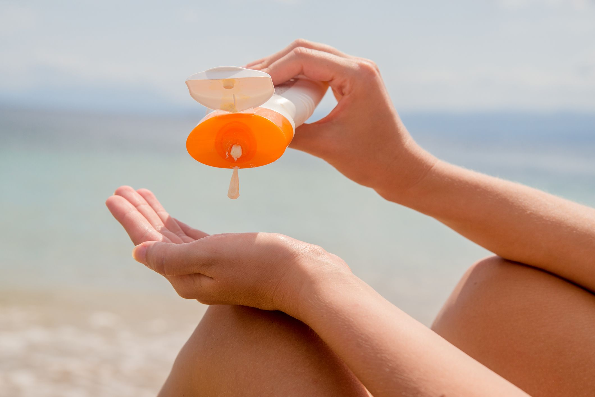
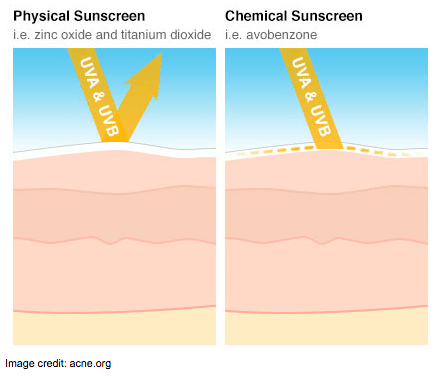
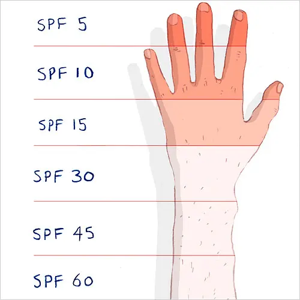

Sunscreen Usage
According to the American Academy of Dermatology (AAD) How does Sunscreen Work?
Some inorganic chemicals, including minerals such as zinc oxide or titanium dioxide, act as a physical sunblock. They reflect UV rays, similar to how white paint reflects light. The white-colored noses on beach-goers in the 1980s and 1990s were due to these compounds; because manufacturers make the inorganic particles much smaller now, we don't see the visible white.
Along with inorganic chemicals, sunscreens often contain organic chemicals, with names such as avobenzone or oxybenzone. Instead of physically deflecting UV light, these molecules absorb UV radiation through their chemical bonds. As the bonds absorb UV radiation, the components of the sunscreen slowly break down and release heat.
Are sunscreens safe?
Skin cancer is the most common cancer in the U.S., and unprotected exposure to the sun’s harmful ultraviolet rays is a major risk factor for skin cancer. Scientific evidence supports the benefits of using sunscreen to minimize short-term and long-term damage to the skin from UV.
AAD dermatologists have seen that sunscreen is an effective way to reduce skin cancer risk and the FDA has regulations on sunscreen.
Reviewing the safety, effectiveness and quality of sunscreens is one of the FDA’s responsibilities. The FDA’s standards for OTC sunscreen products are very high to ensure patient safety. The FDA’s current recommendations are based on current scientific evidence, and the science doesn’t show that any sunscreen ingredients currently available in the U.S. are harmful to human health.
Who Should Wear Sunscreen?
Everyone. Sunscreen use can help prevent skin cancer by protecting you from the sun’s harmful ultraviolet (UV) rays. Anyone can get skin cancer, regardless of age, gender, or skin tone. In fact, it is estimated that one in five Americans will develop skin cancer in their lifetime. 1 Sunscreen can also help prevent premature skin aging, such as wrinkles and age spots, caused by too much unprotected UV exposure.2-4
When should I use sunscreen?
You should apply sunscreen every day on skin not covered by clothing if you will be outside. The sun emits harmful UV rays year-round. Even on cloudy days, up to 80% of the sun’s harmful UV rays can penetrate the clouds. 9
How much sunscreen should I use, and how often should I apply it?
- Apply enough sunscreen to cover all skin not covered by clothing. Most adults need about 1 ounce — or enough to fill a shot glass — to fully cover their body.
- Don't forget to apply to the tops of your feet, your neck, your ears, and the top of your head.
- Apply sunscreen to dry skin 15 minutes before going outdoors.
- Skin cancer also can form on the lips. To protect your lips, apply a lip balm or lipstick that contains sunscreen with an SPF of 30 or higher.
- When outdoors, reapply sunscreen approximately every two hours, or after swimming or sweating, according to the directions on the bottle.
What is the difference between UVA & UVB rays?
Sunlight consists of two types of harmful rays that reach the earth — UVA rays and UVB rays. Overexposure to either can lead to skin cancer. In addition to causing skin cancer, here’s what each of these rays do:
- UVA rays (or aging rays) can prematurely age your skin, causing wrinkles and age spots, and can pass through window glass.
- UVB rays (or burning rays) are the primary cause of sunburn and are blocked by window glass.
The United States Department of Health & Human Services and the World Health Organization’s International Agency of Research on Cancer have declared UV radiation from the sun and artificial sources, such as tanning beds and sun lamps, as a known carcinogen (cancer-causing substance).8,11
There is no safe way to tan. Every time you tan, you damage your skin. As this damage builds, you speed up the aging of your skin and increase your risk for all types of skin cancer.
Do I need to protect myself from visible light from the sun?
Visible light from the sun can worsen skin darkening, also known as hyperpigmentation, particularly for people with darker skin tones.12 To protect yourself from visible light, seek shade, wear sun-protective clothing, and apply a broad-spectrum sunscreen that says “tinted” on the label and has an SPF of 30 or higher. Tinted sunscreens contain iron oxide, which research shows helps protect people’s skin against the negative effects of visible light from the sun.12
What type of sunscreen should I use?
The American Academy of Dermatology recommends that everyone use sunscreen that offers the following:
- Broad-spectrum protection (protects against UVA and UVB rays)
- SPF 30 or higher
- Water resistance
A sunscreen that offers the above helps to protect your skin from sunburn, early skin aging,3,4 and skin cancer. However, sunscreen alone cannot fully protect you. In addition to wearing sunscreen on skin not covered by clothing, dermatologists recommend taking the following steps to protect your skin.
- Seek shade The sun’s rays are strongest between 10 a.m. and 2 p.m. If your shadow is shorter than you are, seek shade.5,6
- Wear sun-protective clothing such as a lightweight and long-sleeved shirt, pants, a wide-brimmed hat, and sunglasses with UV protection, when possible. For more effective sun protection, select clothing with an ultraviolet protection factor (UPF) number on the label.
- Avoid tanning beds. Ultraviolet light from the sun and tanning beds can cause skin cancer and wrinkling.3,7,8 If you want to look tan, you may wish to use a self-tanning product, but continue to use sunscreen with it.
- Use extra caution near water, snow, and sand as they reflect the damaging rays of the sun, which can increase your chance of sunburn.9
Is a high-number SPF better than a low-number one?
Dermatologists recommend using a sunscreen with an SPF of at least 30, which blocks 97% of the sun's UVB rays. Higher-number SPFs block slightly more of the sun's UVB rays, but no sunscreen can block 100% of the sun's UVB rays.
It is also important to remember that high-number SPFs last the same amount of time as low-number SPFs. A high-number SPF does not allow you to spend additional time outdoors without reapplication. As many individuals only apply about 20–50% of the amount of sunscreen needed to achieve the amount of SPF on the label,10application of high-SPF sunscreens help to compensate for this under-application. Sunscreens should be reapplied approximately every two hours when outdoors, even on cloudy days, and after swimming or sweating, according to the directions on the bottle.
Can I use the sunscreen I bought last summer, or do I need to purchase a new bottle each year? Does sunscreen expire?
Dermatologists recommend using sunscreen on all skin not covered by clothing every day when you are outside, not just during the summer. If you are using sunscreen every day and in the correct amount, a bottle should not last long. If you find a bottle of sunscreen that you have not used for some time, here are some guidelines you can follow:
- The FDA requires that all sunscreens retain their original strength for at least three years.
- Some sunscreens include an expiration date. If the expiration date has passed, throw out the sunscreen.
- If you buy a sunscreen that does not have an expiration date, write the date you bought the sunscreen on the bottle. That way, you’ll know when to throw it out.
- You also can look for visible signs that the sunscreen may no longer be good. Any obvious changes in the color or consistency of the product mean it’s time to purchase a new bottle.
- Avoid leaving sunscreen containers under direct sunlight, or in a hot environment such as inside of the car, as this will accelerate the degradation of the sunscreen ingredients.
How do I treat a sunburn?
Your skin can burn if it gets too much sun without proper protection from sunscreen and clothes. To help heal and soothe stinging skin, it is important to begin treating sunburn as soon as you notice it. The first thing you should do is get out of the sun—and preferably indoors. In addition to stopping further UV exposure, dermatologists recommend treating a sunburn with:
- Once indoors, these dermatologists’ tips can help relieve the discomfort:
- Take frequent cool baths or showers to help relieve the pain. As soon as you get out of the bathtub or shower, gently pat yourself dry, but leave a little water on your skin. Then, apply a moisturizer to help trap the water in your skin. This can help ease the dryness.
- Use a moisturizer that contains aloe vera or soy to help soothe sunburned skin. If a particular area feels especially uncomfortable, you may want to apply a hydrocortisone cream that you can buy without a prescription. Do not treat sunburn with “-caine” products (such as benzocaine), as these may irritate the skin or cause an allergic reaction.
- Consider taking aspirin or ibuprofen to help reduce any swelling, redness and discomfort.
- Drink extra water. A sunburn draws fluid to the skin’s surface and away from the rest of the body. Drinking extra water when you are sunburned helps prevent dehydration.
- If your skin blisters, allow the blisters to heal. Blistering skin means you have a second-degree sunburn. You should not pop the blisters, as blisters form to help your skin heal and protect you from infection.
- Take extra care to protect sunburned skin while it heals. Wear clothing that covers your skin when outdoors. Tightly-woven fabrics work best. When you hold the fabric up to a bright light, you shouldn’t see any light coming through.
- With any sunburn, you should avoid the sun while your skin heals. Be sure to cover the sunburn every time you head outdoors.
1Stern RS. Prevalence of a history of skin cancer in 2007: results of an incidence-based model. Arch Dermatol. 2010 Mar;146(3):279-82.
2Food and Drug Administration. Sunscreen: How to Help Protect Your Skin from the Sun. Accessed February 10, 2021.
3Hughes MC, Williams GC, Baker P, Green AC; Sunscreen and Prevention of Skin Aging, a Randomized Trial. Annals of Internal Medicine. 2013; 158(11):781-790.
4Guan LL, Lim HW, Mohammad TF. Sunscreens and Photoaging: A Review of Current Literature. Am J Clin Dermatol. 2021;22(6):819-828. doi:10.1007/s40257-021-00632-5
5Holloway L. Atmospheric sun protection factor on clear days: its observed dependence on solar zenith angle and its relevance to the shadow rule for sun protection. Photochem Photobiol 1992;56:229-34.
6Diffey BL. Time and Place as Modifiers of Personal UV Exposure. Int J Environ Res Public Health. 2018;15(6):1112. Published 2018 May 30. doi:10.3390/ijerph15061112
7An S, Kim K, Moon S, et al. Indoor Tanning and the Risk of Overall and Early-Onset Melanoma and Non-Melanoma Skin Cancer: Systematic Review and Meta-Analysis. Cancers (Basel). 2021;13(23):5940. Published 2021 Nov 25. doi:10.3390/cancers13235940
8IARC Monographs on the Evaluation of Carcinogenic Risks to Humans, No. 100D. IARC Working Group on the Evaluation of Carcinogenic Risks to Humans. Lyon (FR): International Agency for Research on Cancer; 2012.
9Global Solar UV Index. World Health Organization. https://www.who.int/publications/i/item/9241590076.
10Petersen B, Wulf HC. Application of sunscreen− theory and reality. Photodermatology, photoimmunology & photomedicine. 2014 Apr;30(2-3):96-101.
11NTP (National Toxicology Program). 2021. Report on Carcinogens, Fifteenth Edition.; Research Triangle Park, NC: U.S. Department of Health and Human Services, Public Health Service. https://ntp.niehs.nih.gov/go/roc15. DOI: https://doi.org/10.22427/NTP-OTHER-1003
12Lyons AB, Trullas C, Kohli I, Hamzavi IH, Lim HW. Photoprotection beyond ultraviolet radiation: A review of tinted sunscreens. J Am Acad Dermatol. 2021;84(5):1393-1397. doi:10.1016/j.jaad.2020.04.079
13Food and Drug Administration. Consumer Updates: Should You Put Sunscreen on Infants? Not Usually. Accessed May 10, 2022. https://www.fda.gov/consumers/consumer-updates/should-you-put-sunscreen-infants-not-usually